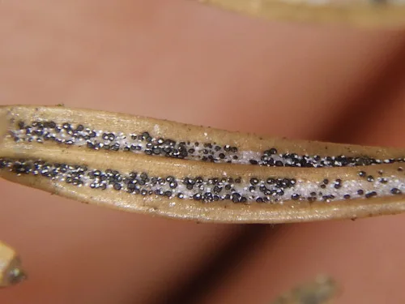

Rows of black dots beneath older spruce needles
Spruce branches can become bare from the inside outward. Matching the missing needles to their year of growth helps distinguish loss of older foliage from a problem killing the newest tips.

Inspect the plant
Follow a spruce branch from its youngest tips inward. Older needles can turn purplish brown while the newest growth remains green. Keep the tip of the branch attached when taking a sample. Once green and discolored needles have been detached and mixed together, their age distribution becomes difficult to assess.
Distinguish similar signs
Turn a discolored attached needle over and use a lens. Black dots in regular rows occupy pores that appear pale on a healthy comparison needle.
Choose a response
Other fungi can occupy those same pores. Collect symptomatic and green needles together for confirmation before considering any protective spray.
Follow up
Increase airflow around low branches and note which annual needle cohorts remain next year. Already shed needles will not grow back on the old section.
A detail to record
On a spruce twig, locate the ring of bud-scale scars that marks the previous growing season. Count needles on either side of it to show whether loss is concentrated in a particular year's growth.
Compare pores at the same magnification
Lay an older purple needle next to a healthy green needle, both with the underside facing up. Use the same lighting and magnification to compare the rows of pores. Random grit will not consistently replace individual pale pores along the rows; a clinic can identify which fungus is present.